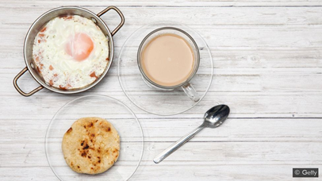

มื้อเช้า....มื้อสำคัญ

คำกล่าวของนักโภชนาการ กล่าวว่า “Eat breakfast like a king, lunch like a prince and
dinnerlike a pauper” หรือ
“หนักเช้าเบาเที่ยง เลี่ยงเย็น เว้นดึก”
เห็นได้ว่าคำกล่าวของนักโภชนาการทั้งสองท่านให้ความสำคัญกับมื้อเช้าเป็นอย่างมาก
ทำไมมื้อเช้าถึงสำคัญและสำคัญอย่างไร? ดังนั้นในบทความนี้จะให้ข้อมูลเกี่ยวกับความสำคัญของอาหารมื้อเช้ากัน
มื้อเช้าถือเป็นมื้อเริ่มต้นของวัน ร่างกายเมื่อได้รับอาหารมื้อเช้า
กลไกภายในร่างกายจะส่งสัญญาณกับระบบการทำงานภายในร่างกายให้รู้ว่า มีพลังงานมากพอให้ดำเนินกิจกรรมต่าง ๆ ในร่างกายอย่างพอเพียง... แต่ถ้าหากเราไม่ได้รับประทานมื้อเช้า กลไกภายในร่างกายจะส่งสัญญาณให้ร่างกายสงวนพลังงานไว้ ด้วยเหตุผลนี้ทำให้มีการศึกษาพบว่าบุคคลที่ไม่ได้รับประทานอาหารมื้อเช้า จะมีดัชนีมวลกาย (Body Mass Index, BMI) สูงกว่าคนที่รับประทานอาหารเช้าเป็นประจำ
อ่านต่อ